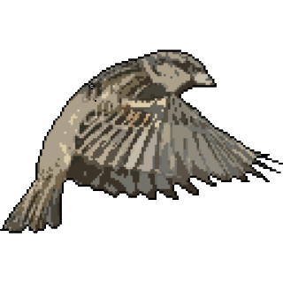

<nav class="navbar navbar-expand navbar-theme navBackgroundColor fixed-top">
  <div class="container-fluid">
    <a class="sidebar-brand" href="index.html">
      
      Bird Community
    </a>
    <button class="navbar-toggler" type="button" data-bs-toggle="collapse" data-bs-target="#navbarCollapse" aria-controls="navbarCollapse" aria-expanded="false" aria-label="Toggle navigation">
      <span class="navbar-toggler-icon"></span>
    </button>
    <div class="collapse navbar-collapse" id="navbarCollapse">
      <ul class="navbar-nav ms-auto">
        <li class="nav-item dropdown">
          <a class="nav-link dropdown-toggle position-relative" routerLink="lastposts" routerLinkActive="active">
            <i class="align-middle fab fa-fw fa-first-order"></i>
          </a>
        </li>
        <li class="nav-item dropdown">
          <a class="nav-link dropdown-toggle position-relative" routerLink="searchpage" routerLinkActive="active">
            <i class="align-middle fas fa-map-marked-alt"></i>
          </a>
        </li>
        <li class="nav-item dropdown">
          <a class="nav-link dropdown-toggle position-relative" routerLink="birdpage" routerLinkActive="active">
            <i class="align-middle fas fa-crow"></i>
          </a>
        </li>
        <li class="nav-item dropdown">
          <a class="nav-link dropdown-toggle position-relative" routerLink="withoutspecie" routerLinkActive="active">
            <i class="align-middle fas fa-diagnoses"></i>
          </a>
        </li>
        <li  *ngIf="isLogged | async" class="nav-item dropdown ms-lg-2">
          <a class="nav-link dropdown-toggle position-relative" href="#" id="userDropdown" data-bs-toggle="dropdown" aria-expanded="false">
            
            
          </a>
          <div class="dropdown-menu dropdown-menu-end" aria-labelledby="userDropdown">
            
            <a class="sidebar-link"  routerLink="createPost/observation" routerLinkActive="active">
              <i class="align-middle me-2 fas fa-fw fa-file-image"></i>
              Create post
            </a>
            <a class="sidebar-link"  routerLink="userpage/{{user.userId}}" routerLinkActive="active">
              <i class="align-middle me-2 far fa-fw fa-list-alt"></i> <span class="align-middle">Page</span>
            </a>
  
            <a class="sidebar-link" routerLink="usermappage/{{user.userId}}" routerLinkActive="active">
              <i class="align-middle mr-2 fas fa-fw fa-map-marked-alt"></i> <span class="align-middle">Map</span>
            </a>
  
            <a class="sidebar-link" routerLink="uservotes" routerLinkActive="active">
              <i class="align-middle me-2 far fa-fw fa-star"></i> <span class="align-middle">Post votes</span>
            </a>
            <a class="sidebar-link"  routerLink="userProfile" routerLinkActive="active">
              <i class="align-middle me-1 fas fa-fw fa-cogs"></i>
              Settings
            </a>
            <div class="dropdown-divider"></div>
             <a class="sidebar-link" routerLink="/" (click)="logout()">
                <i class="align-middle me-2 fas fa-fw fa-sign-in-alt"></i> <span class="align-middle">{{ 'account.logOut' | translate }}</span>
              </a>
          </div>
        </li>
      </ul>
      <div class="d-flex flex-wrap">
        <button [hidden]="isLogged | async" type="button" class="btn btn-outline-light me-2" routerLink="login" >{{ 'account.login' | translate }}</button>
        <button [hidden]="isLogged | async" type="button" class="btn btn-warning" routerLink="signup">{{ 'account.signUp' | translate }}</button>
      </div>
    </div>
  </div>
</nav>

<!--

      <div class="btn-group me-2">
          <button type="button" class="btn btn-secondary dropdown-toggle" data-bs-toggle="dropdown" data-bs-display="static" aria-expanded="false">
              Language
          </button>
          <ul class="dropdown-menu dropdown-menu-lg-end">
              <li><a class="dropdown-item" (click)="changeLang('en')">English</a></li>
              <li><a class="dropdown-item" (click)="changeLang('es')">Español</a></li>
              <li> <a class="dropdown-item" (click)="changeLang('de')">Deutsche</a></li>
          </ul>
      </div>
-->